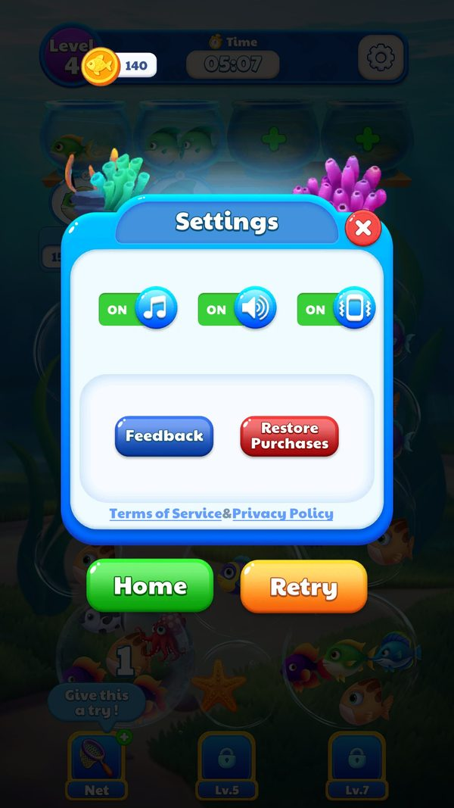

Cài đặt
Màn hình cài đặt gom các chức năng phụ trợ: bật tắt nhạc, đổi ngôn ngữ, mở chính sách riêng tư và điều khoản dịch vụ, gửi phản hồi, khôi phục mua hàng và vào quản lý dữ liệu đám mây.
Mô tả
- Màn hình cài đặt gom các chức năng phụ trợ: bật tắt nhạc, đổi ngôn ngữ, mở chính sách riêng tư và điều khoản dịch vụ, gửi phản hồi, khôi phục mua hàng và vào quản lý dữ liệu đám mây.
- Phần lớn các mục này gọi thẳng xuống SDK nhà phát hành chứ không tự cài đặt, nên hành vi thực tế phụ thuộc cấu hình của SDK.
- Mở chính sách riêng tư: Hiển thị chính sách
- Gửi phản hồi: Người chơi gửi được góp ý
- Đổi ngôn ngữ: Toàn bộ văn bản đổi ngôn ngữ
- Khôi phục mua hàng: Bật lại cờ trong ShopData
Lưu ý
Ảnh chụp màn hình (2)
Chụp trực tiếp từ game đang chạy: 2026-10-06 · LDPlayer 9 · Android 9 · 1080×1920 · máy ảo PHM110 · v1.4111 (cài từ Google Play ngày 12/09/2026) · tài khoản test JadeGill, đang ở level 4. Bấm ảnh để phóng to, dùng phím ← → để chuyển ảnh.



Mở khóa & điểm vào
Có ở Home.
Điểm vào:
- Nút bánh răng ở UIPanelHomeBottom
Cách hoạt động
- UIPanelSetting có 32 method, thuộc nhóm panel lớn.
- Các nút gọi tới SDKManager: GotoPrivacyPolicyStatic và GotoTermsServiceStatic mở trang web, ShowFeedback mở form phản hồi, RequestRestoreBuy khôi phục giao dịch, ShowGDPRDialogStatic mở lại hộp thoại đồng ý.
- Ngoài ra còn công tắc nhạc ghi vào MUSIC_KEY và mục đổi ngôn ngữ ghi vào ELocalizationType.
Luồng chi tiết theo code
UIPanelSetting có 32 method, thuộc nhóm panel lớn. Các nút gọi tới SDKManager: GotoPrivacyPolicyStatic và GotoTermsServiceStatic mở trang web, ShowFeedback mở form phản hồi, RequestRestoreBuy khôi phục giao dịch, ShowGDPRDialogStatic mở lại hộp thoại đồng ý. Ngoài ra còn công tắc nhạc ghi vào MUSIC_KEY và mục đổi ngôn ngữ ghi vào ELocalizationType.
Số liệu chính
| Chỉ số | Giá trị | Nguồn |
|---|---|---|
| MUSIC_KEY và ELocalizationType | false và 1 | PlayerPrefs |
Use case (4)
Bấm vào từng use case để mở. Mở/đóng tất cả
UC-01 Mở chính sách riêng tư
Các bước- SDKManager.GotoPrivacyPolicyStatic
- SDK mở trình duyệt hoặc webview
| Actor | Player |
|---|---|
| Trigger | Bấm mục chính sách |
| Điều kiện | Có mạng |
| Kết quả | Hiển thị chính sách |
| Evidence | SDKManager.GotoPrivacyPolicyStatic |
UC-02 Gửi phản hồi
Các bước- SDKManager.ShowFeedback
- SDK mở form
| Actor | Player |
|---|---|
| Trigger | Bấm mục phản hồi |
| Điều kiện | Có mạng |
| Kết quả | Người chơi gửi được góp ý |
| Evidence | SDKManager.ShowFeedback |
UC-03 Đổi ngôn ngữ
Các bước- Ghi ELocalizationType
- LocalizationManager đổi cột đang dùng
- Giao diện dựng lại
| Actor | Player |
|---|---|
| Trigger | Chọn ngôn ngữ khác |
| Điều kiện | Không có |
| Kết quả | Toàn bộ văn bản đổi ngôn ngữ |
| Evidence | PlayerPrefs ELocalizationType; LocalizationManager |
UC-04 Khôi phục mua hàng
Các bước- SDKManager.RequestRestoreBuy
| Actor | Player |
|---|---|
| Trigger | Bấm khôi phục |
| Điều kiện | Đã từng mua |
| Kết quả | Bật lại cờ trong ShopData |
| Evidence | SDKManager.RequestRestoreBuy |
Cấu hình (2)
Gộp mọi nguồn: const trong code, JSON mặc định trong Resources, bảng static, storage key, AB test, cờ server.
| Nguồn | Key | Kiểu | Giá trị | Ý nghĩa | Nơi định nghĩa |
|---|---|---|---|---|---|
| storage key | MUSIC_KEY và ELocalizationType | string/int | false và 1 | Hai tuỳ chọn duy nhất lưu cục bộ | PlayerPrefs |
| runtime LDPlayer 06/10/2026 | Thành phần Settings | rule | Music / Sound / Vibration, Feedback, Restore Purchases, Terms of Service & Privacy Policy; trong màn thêm Home / Retry | Không có chọn ngôn ngữ hay đăng nhập | ảnh chụp screenshots/settings_panel.jpg |
Số liệu đo trên máy
Đo trên máy
| Hạng mục | Giá trị | Ghi chú |
|---|---|---|
| Công tắc | Music, Sound, Vibration (cả ba ON) | |
| Nút | Feedback, Restore Purchases | |
| Không có | chọn ngôn ngữ, đăng nhập, cloud save | ngôn ngữ theo máy |
Backend / server
| Command | Chiều | Mục đích |
|---|---|---|
GotoPrivacyPolicyStatic / GotoTermsServiceStatic | client sang SDK | Mở trang pháp lý |
ShowFeedback | client sang SDK | Mở form phản hồi |
ShowGDPRDialogStatic | client sang SDK | Mở lại hộp thoại đồng ý |
Giao diện (UI)
| Element | Class | Mục đích |
|---|---|---|
| Cài đặt | UIPanelSetting | Gom tuỳ chọn và mục pháp lý |
Storage keys
MUSIC_KEY ELocalizationType
Chưa đọc được / ghi chú
- Đường dẫn trang chính sách và điều khoản nằm trong SDK phía Java nên không có trong chuỗi của Assembly-CSharp
Tính năng liên quan
Âm thanh Lưu trữ đám mây Cửa hàng và mua trong ứng dụng Localization
Nguồn đã đọc
- features/UIPanelSetting.md
- features/SDKManager.md
- feature_extras.json
- screenshots/
- facts/runtime/decoded/playerprefs_2026-10-06.json